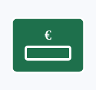
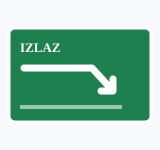
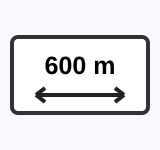
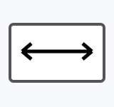
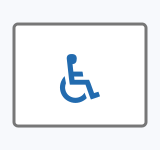
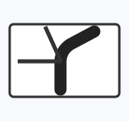
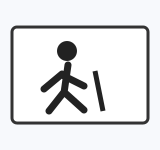
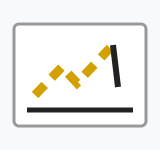
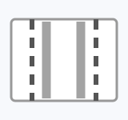

Зображення знака
Зображення знакаA01
Opasnost na cesti
Інша небезпека
Позначає небезпеку, для якої Правилами не передбачено окремого знака. До нього має додаватися табличка, що пояснює характер небезпеки.
Джерело ↗Пошук за кодом, хорватською чи українською назвою. Натисніть на знак або «Джерело», щоб відкрити його сторінку. Навчальні схеми підписано окремо — їх не слід плутати з точним нормативним зображенням.
Зображення знакаІнша небезпека
Позначає небезпеку, для якої Правилами не передбачено окремого знака. До нього має додаватися табличка, що пояснює характер небезпеки.
Джерело ↗ Зображення знака
Зображення знакаПерехрестя рівнозначних доріг
Попереджає про перехрестя, де жодна дорога не має встановленої переваги. Зазвичай ставиться поза населеними пунктами.
Джерело ↗ Зображення знака
Зображення знакаПерехрестя з круговим рухом
Попереджає про наближення до перехрестя з організованим круговим рухом.
Джерело ↗ Зображення знака
Зображення знакаПерехрестя з другорядною дорогою під певним кутом
Показує, що дорога з перевагою перетинається або з'єднується з другорядною дорогою. Конкретний символ залежить від реальної геометрії.
Джерело ↗ Зображення знака
Зображення знакаНебезпечний поворот або кілька поворотів
Попереджає про поворот(и), небезпечні за геометрією або через недостатню оглядовість.
Джерело ↗ Зображення знака
Зображення знакаНебезпечний спуск
Попереджає про небезпечний спуск; відсоток на знаку показує ухил.
Джерело ↗ Зображення знака
Зображення знакаНебезпечний підйом
Попереджає про небезпечний підйом; відсоток на знаку показує ухил.
Джерело ↗ Зображення знака
Зображення знакаЗвуження проїзної частини
Попереджає про небезпечне звуження проїзної частини; існують варіанти звуження з обох або з одного боку.
Джерело ↗ Зображення знака
Зображення знакаНерівна проїзна частина
Охоплює нерівності, просідання, послідовні нерівності або колійність — залежно від варіанта знака.
Джерело ↗ Зображення знака
Зображення знакаСлизька проїзна частина
Попереджає, що покриття за певних погодних чи інших умов може бути слизьким.
Джерело ↗ Зображення знака
Зображення знакаОжеледиця
Попереджає про можливу раптову появу ожеледиці. Знак ставлять/знімають відповідно до зимового утримання доріг.
Джерело ↗ Зображення знака
Зображення знакаДрібне каміння на проїзній частині
Попереджає про ділянку з незакріпленим щебенем або дрібним камінням і ризик викидання каміння колесами.
Джерело ↗ Зображення знака
Зображення знакаНебезпека падіння каміння / каміння на дорозі
Попереджає про падіння каміння або каміння, що може лежати на проїзній частині; символ узгоджується з реальною стороною небезпеки.
Джерело ↗ Зображення знака
Зображення знакаНаближення до світлофора
Попереджає про перехрестя або пішохідний перехід, де рух регулюється світлофором.
Джерело ↗ Зображення знака
Зображення знакаДорожні роботи
Ставиться безпосередньо перед роботами; вночі та за поганої видимості має доповнюватися жовтим миготливим світлом.
Джерело ↗ Зображення знака
Зображення знакаДвосторонній рух
Позначає місце, від якого рух починає здійснюватися в обох напрямках.
Джерело ↗ Зображення знака
Зображення знакаДорожньо-транспортна пригода
Тимчасово попереджає про ДТП на дорозі; встановлюється та прибирається поліцією або службою дороги.
Джерело ↗ Зображення знака
Зображення знакаЧерга/колона зупинених транспортних засобів
Попереджає про ризик появи черги зупинених автомобілів, зазвичай поза населеними пунктами.
Джерело ↗ Зображення знака
Зображення знакаНеукріплене узбіччя
Попереджає про ділянку з неукріпленим узбіччям; зазвичай доповнюється табличкою довжини ділянки.
Джерело ↗ Зображення знака
Зображення знака Зображення знака
Зображення знакаПозначений пішохідний перехід
Попереджає про наближення до позначеного пішохідного переходу; зазвичай застосовується поза населеними пунктами.
Джерело ↗ Зображення знака
Зображення знакаДіти
Попереджає про місце, де діти часто або масово виходять на дорогу: школа, садок, майданчик тощо.
Джерело ↗ Зображення знака
Зображення знака Зображення знака
Зображення знакаТунель або галерея
Попереджає про наближення до тунелю або дорожньої галереї.
Джерело ↗ Зображення знака
Зображення знакаБоковий вітер
Попереджає про частий сильний боковий вітер; напрям символу має відповідати типовому напрямку вітру.
Джерело ↗ Зображення знака
Зображення знака Зображення знака
Зображення знакаВелосипедисти
Попереджає про ділянку, де велосипедисти рухаються дорогою або часто виїжджають на неї збоку.
Джерело ↗ Зображення знака
Зображення знака Зображення знака
Зображення знакаНабережна / виїзд до води
Попереджає про місце, де дорога або транспортна поверхня закінчується біля берега.
Джерело ↗ Зображення знака
Зображення знакаТрактори та робочі машини
Попереджає про ділянку, де трактори й інші робочі машини часто рухаються або виїжджають на дорогу.
Джерело ↗ Зображення знака
Зображення знакаТрамвайна колія
Попереджає про перетин дороги з трамвайною колією в одному рівні.
Джерело ↗ Зображення знака
Зображення знакаСвійські тварини
Попереджає про місце, де свійські тварини переходять дорогу або рухаються вздовж неї.
Джерело ↗ Зображення знака
Зображення знакаДикі тварини
Позначає особливо небезпечні місця, де дикі тварини часто переходять дорогу.
Джерело ↗ Зображення знака
Зображення знакаЗалізничний переїзд зі шлагбаумом/напівшлагбаумом
Джерело ↗ Зображення знака
Зображення знакаЗалізничний переїзд без шлагбаума
Попереджає про нерегульований шлагбаумами переїзд.
Джерело ↗ Зображення знака
Зображення знакаВідстань до залізничного переїзду
Серія знаків показує наближення до переїзду. У хорватському нормативі орієнтири 240 м, 160 м і 80 м залежно від кількості косих смуг.
Джерело ↗ Зображення знака
Зображення знакаАндріївський хрест
Позначає сам нерегульований переїзд: один хрест — одна колія; подвійний варіант — дві або більше колій.
Джерело ↗ Зображення знака
Зображення знакаДати дорогу
На цьому перехресті водій повинен надати перевагу всім транспортним засобам, що рухаються дорогою, на яку він виїжджає.
Джерело ↗ Зображення знака
Зображення знакаSTOP — обов'язкова зупинка
Водій зобов'язаний повністю зупинити транспортний засіб перед перехрестям або переїздом у визначеному місці.
Джерело ↗ Зображення знака
Зображення знакаРух усіх транспортних засобів заборонено в обох напрямках
Заборона стосується руху всіх транспортних засобів у двох напрямках.
Джерело ↗ Зображення знака
Зображення знакаВ'їзд заборонено
Забороняє рух із того напрямку, в який повернуто знак.
Джерело ↗ Зображення знака
Зображення знакаПеревага зустрічного руху
На звуженні зустрічні транспортні засоби мають перевагу. На протилежному боці встановлюється C01.
Джерело ↗ Зображення знака
Зображення знакаРух механічних ТЗ заборонено, крім мопедів і мотоциклів без причепа
Виняток у самому визначенні важливий: мопеди й мотоцикли без причепа не охоплюються цією забороною.
Джерело ↗ Зображення знака
Зображення знака Зображення знака
Зображення знакаРух вантажних автомобілів заборонено
Якщо на знаку зазначена маса, заборона діє лише на вантажні ТЗ, максимальна дозволена маса яких перевищує зазначену.
Джерело ↗ Зображення знака
Зображення знакаРух ТЗ з речовинами, небезпечними для довкілля, заборонено
Джерело ↗ Зображення знака
Зображення знакаРух ТЗ з вибуховими/легкозаймистими речовинами заборонено
Джерело ↗ Зображення знака
Зображення знакаРух ТЗ з небезпечними вантажами заборонено
Джерело ↗ Зображення знака
Зображення знакаРух механічних ТЗ з причепом заборонено
Джерело ↗ Зображення знака
Зображення знакаРух вантажних ТЗ з причепом заборонено
Джерело ↗ Зображення знака
Зображення знака Зображення знака
Зображення знакаРух мотоциклів/трициклів/квадрициклів заборонено
Джерело ↗ Зображення знака
Зображення знака Зображення знака
Зображення знака Зображення знака
Зображення знака Зображення знака
Зображення знакаРух указаних видів ТЗ/учасників заборонено
Заборона визначається комбінацією піктограм усередині знака.
Джерело ↗ Зображення знака
Зображення знакаРух усіх механічних ТЗ заборонено
Не плутати з B03: B20 стосується саме моторних транспортних засобів.
Джерело ↗ Зображення знака
Зображення знака Зображення знака
Зображення знака Зображення знака
Зображення знака Зображення знака
Зображення знакаОбмеження загальної маси
Не плутати з обмеженням навантаження на вісь B25.
Джерело ↗ Зображення знака
Зображення знакаОбмеження навантаження на вісь
Вказана величина стосується саме осьового навантаження, а не загальної маси ТЗ.
Джерело ↗ Зображення знака
Зображення знака Зображення знака
Зображення знакаМінімальна дистанція між транспортними засобами
Число показує мінімальну відстань, яку водій зобов'язаний тримати до іншого ТЗ.
Джерело ↗ Зображення знака
Зображення знакаПоворот ліворуч / праворуч заборонено
Існують лівий і правий варіанти.
Джерело ↗ Зображення знака
Зображення знака.svg) Зображення знака
Зображення знакаОбмеження максимальної швидкості
Число — максимальна швидкість в ідеальних умовах. Таблички можуть обмежувати дію конкретним видом або масою ТЗ.
Джерело ↗ Зображення знака
Зображення знакаОбгін заборонено
У хорватському визначенні заборона не поширюється на обгін мопедів і мотоциклів без причепа.
Джерело ↗ Зображення знака
Зображення знакаОбгін вантажним ТЗ заборонено
За замовчуванням стосується вантажних ТЗ понад 3,5 т, якщо табличкою не визначено іншу масу.
Джерело ↗ Зображення знака
Зображення знакаОбов'язкова зупинка для контролю / оплати
Може означати митницю, плату за дорогу, поліцейський чи військовий контроль — залежно від напису.
Джерело ↗ Зображення знака
Зображення знакаЗвукові сигнали заборонено
Виняток — безпосередня небезпека.
Джерело ↗ Зображення знака
Зображення знака Зображення знака
Зображення знакаЗупинка і стоянка заборонені
Заборонені і зупинка, і паркування. Стрілка на знаку/табличці може уточнювати напрямок дії.
Джерело ↗ Зображення знака
Зображення знакаСтоянка заборонена
Заборонене паркування, але не всяка коротка зупинка. Не плутати з B36.
Джерело ↗.svg) Зображення знака
Зображення знакаМінімальна дозволена швидкість
Транспортні засоби в ідеальних умовах повинні рухатися не повільніше вказаної швидкості.
Джерело ↗ Зображення знака
Зображення знакаЛанцюги протиковзання обов'язкові
Стосується моторних ТЗ (крім мопедів і мотоциклів): за засніженої дороги ланцюги мають бути на ведучих колесах.
Джерело ↗ Зображення знака
Зображення знака Зображення знака
Зображення знака Зображення знака
Зображення знакаРозділена пішохідно-велосипедна доріжка
Пішохідна й велосипедна частини фізично/лінією розділені.
Джерело ↗ Зображення знака
Зображення знакаСпільна пішохідно-велосипедна доріжка
Поверхні не розділені; рух велосипедистів має бути пристосований до руху пішоходів.
Джерело ↗ Зображення знака
Зображення знака Зображення знака
Зображення знакаОбов'язковий напрямок
Показує напрямок/напрямки, якими транспортні засоби зобов'язані рухатися.
Джерело ↗ Зображення знака
Зображення знакаДозволені напрямки руху
Не плутати з B45: знак показує дозволені варіанти напрямку.
Джерело ↗ Зображення знака
Зображення знакаОбов'язковий об'їзд перешкоди
Показує, з якого боку потрібно об'їхати острівець або іншу перешкоду.
Джерело ↗ Зображення знака
Зображення знакаОбов'язкове ближнє світло
На цій ділянці транспортні засоби повинні мати ввімкнене ближнє світло.
Джерело ↗ Зображення знака
Зображення знакаПеревага перед зустрічним рухом
На вузькій ділянці ви маєте перевагу над зустрічними ТЗ. На протилежному боці має стояти B05.
Джерело ↗ Зображення знака
Зображення знакаПішохідний / пішохідно-велосипедний перехід
Позначає безпосереднє місце переходу, а не лише попередження про наближення до нього.
Джерело ↗ Зображення знака
Зображення знакаМісце частого руху дітей
Позначає місце, де діти часто або масово рухаються: школа, садок, майданчик тощо.
Джерело ↗ Зображення знака
Зображення знака Зображення знака
Зображення знакаДорога з одностороннім рухом
Є варіант уздовж односторонньої дороги і варіант для Т-подібного в'їзду на неї.
Джерело ↗ Зображення знака
Зображення знакаГоловна дорога / дорога з перевагою
Перевага діє відносно транспортних засобів, що рухаються дорогами, які перетинають цю дорогу.
Джерело ↗ Зображення знака
Зображення знакаКінець головної дороги
Після цього місця автоматичної переваги, яку давав C06, більше немає.
Джерело ↗ Зображення знака
Зображення знакаЗасоби заспокоєння руху
Позначає місце, де встановлені фізичні засоби зниження швидкості.
Джерело ↗ Зображення знака
Зображення знака Зображення знака
Зображення знака.svg) Зображення знака
Зображення знака.svg) Зображення знака
Зображення знака Зображення знака
Зображення знака Зображення знака
Зображення знакаКінець усіх заборон
Скасовує всі чинні заборони, що діяли на цій дорозі.
Джерело ↗ Зображення знака
Зображення знака Зображення знака
Зображення знака Зображення знака
Зображення знака Зображення знака
Зображення знака Зображення знака
Зображення знака Зображення знака
Зображення знака Зображення знака
Зображення знака.svg) Зображення знака
Зображення знакаЗона обмеженої швидкості
Обмеження діє в усій зоні, доки не буде позначено її кінець C23.
Джерело ↗.svg) Зображення знака
Зображення знака Зображення знака
Зображення знакаЗона обмеженого в часі паркування
Знак задає загальний режим для зони; табличка може уточнювати дні/години.
Джерело ↗ Зображення знака
Зображення знака Зображення знака
Зображення знакаПішохідна зона
Зона призначена для пішоходів; рух моторних транспортних засобів заборонений.
Джерело ↗ Зображення знака
Зображення знака Зображення знака
Зображення знакаЗона заспокоєного руху
У цій зоні швидкість не повинна перевищувати швидкість ходьби пішохода, оскільки дитяча гра дозволена на всій площі.
Джерело ↗ Зображення знака
Зображення знака Зображення знака
Зображення знакаЗона зелених поверхонь для пішоходів і велосипедистів
Джерело ↗ Зображення знака
Зображення знакаЗона руху незрячих і слабозорих осіб
Позначає початок ділянки, де очікується велика кількість незрячих/слабозорих людей.
Джерело ↗ Зображення знака
Зображення знака Зображення знака
Зображення знакаРекомендована швидкість
Це рекомендація для ідеальних умов, а не максимальне обмеження. Не плутати з B30.
Джерело ↗ Зображення знака
Зображення знака Зображення знака
Зображення знакаШкільний патруль / місце регулювання переходу дітей
Позначає місце, де члени шкільної дорожньої служби забезпечують перехід дітей.
Джерело ↗ Зображення знака
Зображення знака Зображення знака
Зображення знака Зображення знака
Зображення знака Зображення знака
Зображення знакаПаркування
Може означати звичайне, гаражне або обмежене в часі паркування; спосіб/умови можуть уточнюватися символами чи табличками.
Джерело ↗ Зображення знака
Зображення знакаПаркування Park & Ride
Паркінг для подальшого продовження поїздки громадським транспортом.
Джерело ↗ Зображення знака
Зображення знака Зображення знака
Зображення знакаАЗС / газова / зарядна станція
Існують окремі варіанти для LPG, CNG та заряджання електромобілів.
Джерело ↗ Зображення знака
Зображення знака Зображення знака
Зображення знака Зображення знака
Зображення знака Зображення знака
Зображення знака Зображення знака
Зображення знака Зображення знака
Зображення знакаДорога лише для механічних ТЗ / швидкісна дорога
Позначає початок дороги, на яку поширюється спеціальний режим для моторного транспорту.
Джерело ↗ Зображення знака
Зображення знакаКінець дороги лише для механічних ТЗ / швидкісної дороги
Джерело ↗ Зображення знака
Зображення знакаТупик / дорога без виїзду
Символ має показувати реальне розташування тупикової дороги відносно дороги, на якій стоїть знак.
Джерело ↗ Зображення знака
Зображення знакаОб'їзний напрямок для повороту ліворуч
Показує маршрут, яким треба їхати, щоб виконати бажаний лівий поворот там, де прямий поворот заборонений.
Джерело ↗ Зображення знака
Зображення знакаАварійна смуга/майданчик для примусової зупинки
Позначає спеціально влаштований майданчик для примусової зупинки, насамперед на спусках.
Джерело ↗ Зображення знака
Зображення знакаПочаток населеного пункту
Від цього знака починають діяти правила, встановлені для руху в населеному пункті.
Джерело ↗ Зображення знака
Зображення знакаКінець населеного пункту
Від цього знака припиняється дія правил, установлених саме для населеного пункту.
Джерело ↗ Зображення знака
Зображення знакаПочаток смуги громадського транспорту
Позначає місце, де відкривається спеціальна смуга для громадського пасажирського транспорту.
Джерело ↗ Зображення знака
Зображення знакаКінець смуги громадського транспорту
Позначає місце завершення такої спеціальної смуги.
Джерело ↗ Зображення знака
Зображення знакаСмуга для громадського транспорту
Позначає смугу, призначену для транспортних засобів громадського пасажирського транспорту.
Джерело ↗ Зображення знака
Зображення знакаВідстань до початку смуги з'їзду
На автомагістралі/швидкісній дорозі показує відстань до початку смуги з'їзду.
Джерело ↗ Зображення знака
Зображення знакаЗ'їзд з автомагістралі/швидкісної дороги
Позначає безпосереднє місце з'їзду.
Джерело ↗ Зображення знака
Зображення знакаЗона відпочинку / сервісний майданчик
Показує сервісні об'єкти, відстань до зони відпочинку або наступної АЗС.
Джерело ↗ Зображення знака
Зображення знакаЗаборонені учасники/ТЗ на автомагістралі або швидкісній дорозі
Узагальнює, яким видам транспортних засобів/учасників рух заборонений.
Джерело ↗
Навчальна схема Зображення знака
Зображення знакаПерестроювання перед пунктом оплати
Символи відповідають способам оплати й потрібному перестроюванню.
Джерело ↗ Зображення знака
Зображення знакаСпосіб оплати дороги
Показує, які способи оплати доступні на конкретній смузі/пункті.
Джерело ↗ Зображення знака
Зображення знакаОб'їзд
Помаранчевий знак для тимчасового перенаправлення руху через об'їзд, заборону або пошкодження дороги.
Джерело ↗ Зображення знака
Зображення знакаНапрямок тимчасового об'їзду
Помаранчевий знак; стрілка має відповідати фактичному маршруту тимчасового об'їзду.
Джерело ↗ Навчальна схема
Навчальна схемаПопередній покажчик з'їзду з автомагістралі/швидкісної дороги
Зазвичай ставиться приблизно за 2000 м до початку смуги з'їзду. Зелений фон — автомагістраль, синій — швидкісна дорога.
Джерело ↗ Навчальна схема
Навчальна схемаПопередній покажчик великої розв'язки
Анонсує міжрегіональну розв'язку автомагістралей/швидкісних доріг.
Джерело ↗ Навчальна схема
Навчальна схемаПопередній покажчик напрямків і пунктів призначення
Показує геометрію перехрестя, напрямки, номери доріг і назви місць; колір фону залежить від типу дороги.
Джерело ↗
Навчальна схемаПокажчик з'їзду / відгалуження
Показує назву з'їзду або відгалуження на дорогах із багаторівневими розв'язками.
Джерело ↗ Зображення знака
Зображення знакаВідстань до місця дії знака
Показує відстань від основного знака до початку небезпечної/регульованої ділянки.
Джерело ↗
Навчальна схемаДовжина ділянки дії знака
Не плутати з E01: це не відстань ДО місця, а довжина ділянки, НА ЯКІЙ діє попередження/заборона/інформація.
Джерело ↗ Зображення знака
Зображення знакаВідстань і напрямок до об'єкта
Показує, де відносно знака знаходиться об'єкт або ділянка.
Джерело ↗ Зображення знака
Зображення знака Зображення знака
Зображення знакаДодаткове пояснення знака
Текстом або символом уточнює зміст, якщо основного символу недостатньо.
Джерело ↗ Зображення знака
Зображення знакаВид ТЗ, на який поширюється знак
Обмежує дію основного знака лише зазначеним видом транспортного засобу.
Джерело ↗ Зображення знака
Зображення знакаМаксимальна дозволена маса, до якої відноситься припис
Уточнює масову категорію транспортних засобів, на які поширюється основний знак.
Джерело ↗ Зображення знака
Зображення знакаЕвакуація автомобіля евакуатором
Застосовується разом із забороною зупинки/паркування й попереджає про примусове переміщення.
Джерело ↗
Навчальна схемаНапрямок дії заборони зупинки/стоянки
Стрілки показують: заборона діє ДО знака, ПІСЛЯ знака або в обидва боки. Дуже типова пастка.
Джерело ↗Спосіб розташування автомобіля під час паркування
Показує, як саме треба поставити автомобіль відносно краю дороги/тротуару.
Джерело ↗
Навчальна схема Зображення знака
Зображення знака Зображення знака
Зображення знакаНесподівані погодні умови
Уточнює небезпеку дощу, снігу чи інших метеоумов.
Джерело ↗
Навчальна схемаНапрямок головної дороги на перехресті
Товста лінія показує фактичний напрямок дороги з перевагою. Поворот головної дороги не означає автоматично рух 'прямо'.
Джерело ↗
Навчальна схема Зображення знака
Зображення знака
Навчальна схемаНанесення розмітки / косіння
Тимчасово пояснює вид дорожніх робіт.
Джерело ↗
Навчальна схемаКолійність дорожнього покриття
Уточнює причину обмеження, зазвичай разом із B30.
Джерело ↗ Зображення знака
Зображення знака Зображення знака
Зображення знака Зображення знака
Зображення знакаПідвищена концентрація небезпечних речовин у повітрі
Джерело ↗ Зображення знака
Зображення знакаВимкнути двигун під час тривалої зупинки
Вимагає вимкнути двигун при тривалому очікуванні в місці, де рух регулюється світлофорами.
Джерело ↗ Зображення знака
Зображення знакаЗакрита смуга на пункті оплати
Додаткова табличка показує закриту смугу на платіжному пункті.
Джерело ↗Світлофор: червоне / червоне+жовте / зелене / жовте
Червоне забороняє проїзд. Червоне+жовте лише готує до зеленого і НЕ скасовує заборону. Жовте після зеленого: якщо можна безпечно зупинитися, не можна перетинати стоп-лінію.
Джерело ↗Жовтий миготливий сигнал
Не дає переваги; зобов'язує всіх учасників рухатися з підвищеною обережністю.
Джерело ↗Додаткова зелена стрілка
Дозволяє рух у напрямку стрілки при ввімкненому червоному основному сигналі, але водій повинен виконати інші правила пріоритету.
Джерело ↗Червоний хрест над смугою
Забороняє рух смугою, над якою він розташований.
Джерело ↗Зелена стрілка над смугою
Дозволяє рух смугою, над якою сигнал розташований.
Джерело ↗Жовта стрілка для зміни смуги
Вказує необхідність залишити смугу в напрямку стрілки.
Джерело ↗Суцільна розділювальна лінія
Перетинати її транспортним засобом або рухатися по ній заборонено.
Джерело ↗Переривчаста розділювальна лінія
Переривчаста лінія означає відсутність заборони на її перетин, якщо маневр безпечний і дозволений іншими правилами.
Джерело ↗Лінія попередження
Попереджає про наближення до суцільної розділювальної лінії; зазвичай має довші штрихи/коротші проміжки.
Джерело ↗Подвійна комбінована лінія
Дозволяє обгін/перетин лише з боку переривчастої лінії; з боку суцільної — забороняє.
Джерело ↗Суцільна стоп-лінія
Позначає місце, перед яким водій ОБОВ'ЯЗКОВО зупиняє транспортний засіб.
Джерело ↗Переривчаста лінія «Дати дорогу»
Позначає місце, де водій зупиняється ЛИШЕ ЯКЩО це потрібно, щоб пропустити транспортні засоби на дорозі з перевагою.
Джерело ↗Коса широка переривчаста лінія
Позначає початок смуги громадського транспорту; ці лінії жовті.
Джерело ↗Коса широка суцільна лінія
Позначає кінець смуги громадського транспорту; ці лінії жовті.
Джерело ↗Пішохідний перехід
Частина проїзної частини, призначена для переходу пішоходів.
Джерело ↗Велосипедний переїзд
Позначена частина проїзної частини для перетину велосипедистами.
Джерело ↗Стрілки напрямків руху
Стрілки на смузі показують дозволений/призначений напрямок руху з конкретної смуги.
Джерело ↗Стрілки раннього перестроювання перед двома близькими перехрестями
Показують, що для повороту на ДРУГОМУ перехресті треба перестроїтися ще ДО ПЕРШОГО.
Джерело ↗Стрілки перенаправлення руху
Використовуються при закритті/скасуванні смуги для завчасного переведення потоку.
Джерело ↗Стрілка попередження про завершення обгону
Попереджає, що ділянка для обгону закінчується і треба повернутися у свою смугу.
Джерело ↗Жовта розмітка заборони паркування
Жовта розмітка на проїзній частині використовується для позначення заборони паркування.
Джерело ↗Жовта розмітка заборони зупинки й паркування
Позначає місце, де не можна ні зупинятися, ні паркуватися.
Джерело ↗Розмітка автобусної зупинки
Жовта розмітка з написом BUS та відповідними символами.
Джерело ↗Розмітка штучних нерівностей
Жовті позначення використовують для виділення штучних нерівностей і піднятих платформ.
Джерело ↗Напис STOP на проїзній частині
Може наноситися перед суцільною стоп-лінією.
Джерело ↗Символ знака STOP на проїзній частині
Може додатково дублювати вимогу зупинки на дорожньому покритті.
Джерело ↗